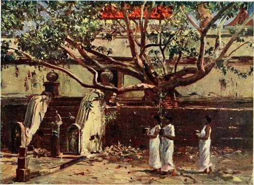

Chapter XVII. The Buried Cities
Description
This section is from the book "Ceylon", by Alfred Clark. Also available from Amazon: Ceylon.
Chapter XVII. The Buried Cities
It was little realized in the early days of British occupation that in the forest-covered plains in the centre of Ceylon there existed the majestic remains of several ancient cities, the oldest of which— Anuradhapura—was flourishing before Rome was founded. So submerged were they in the sea of trees, and so buried by leaf-mould, slowly formed through many centuries, and by the ceaseless action of millions"bf earthworms, which covered them with their casts, that most of the buildings had entirely disappeared.
The great dago has were so overgrown by trees as to seem only miniature cone-shaped hills, the beauti-tul pokunas, or bathing-places, constructed of cut stone, had become entirely filled up, and only the capitals of the lofty stone pillars supporting the long fallen-in roofs of palaces, temples, and monasteries remained above ground. Mighty inscribed monoliths, commemorating the deeds of ancient Kings, had been overthrown by the resistless force of growing tree-roots. Exquisite shrines of carven stone were in the grip of parasite banian roots, which flowed over them like huge green candle-gutterings.
Some thirty years ago the work of excavation was commenced by the British Government, and much of the ancient glory of these long-forgotten cities brought to light. The giant dagobas, containing the collar-bone, the nail-parings, and other relics of Buddha, were cleared of trees and brushwood, and the debris at their feet removed, revealing the ornamental stone bases, chapels, and steps ; the great bathing-places were emptied of earth, and many interesting royal, religious, and public edifices opened up. Numerous beautiful examples of ancient architecture and stonework were uncovered, such as flights of steps, bas-reliefs, pillars, guard-stones, and threshold-stones, all richly carven, and in many cases as sharp-cut as on the day they were placed in position, over two thousand years ago.
Some curious " stone canoes," twenty feet and more in length, were found, the use of which can only be conjectured. They have been variously supposed to have been the feeding-troughs of the King's elephants, or the receptacles for boiled rice, for distribution to the people on a vast scale, or vats for the dyeing of the yellow robes of priests.
Perhaps the most interesting thing at Anuradha-pura is the Sacred Bo-Tree, the oldest historical tree in the world. It is said to have grown from a cutting from the Bo-Tree in Northern India, under which Buddha " attained Enlightenment," brought to the island by the royal priestess Sanghamitta in the year 288 b.c.
The Sacred Bo-Tree.
It grows on a large brick-built platform, with steps leading up to it, and there is nothing impressive about the dilapidated buildings which surround it. The tree itself is insignificant in size and appearance, and gives little indication of its venerable age. There can be no doubt, however, that it is the identical tree frequently mentioned in the ancient Singhalese chronicles, and that it has been an object of adoration to Buddhists for nearly two thousand two hundred years. Its fallen leaves are carried away in large numbers as relics.
Another buried city is Polannaruwa, situated about forty miles to the south-east of Anaradhapura. It did not come into existence till about a.d. 769, and was the second of the ancient capitals of the country. Like the mother-city, it contains great dagobas, palaces, and temples, but none of such size and magnificence, though several are very beautiful. Near some rocks lies a gigantic recumbent figure of Buddha, rorty-five feet long.
Not far from Polannaruwa is the famous rock-fortress Sigiriya, to many people more interesting than the buried cities. It is an immense cylindrical bare rock, rising some four hundred feet above the forest, and has a flat top about an acre in extent. Sheer precipices surround it on three sides, and it can be climbed, but with difficulty, on its eastern side only. Until a few years ago its summit was covered with trees. These were cleared away, and the ruins uncovered of the fortified palace, built about a.d. 477 by Kasi'appa the Parricide, a tyrant King, who fled to this impregnable rock from his revolted people. A finely carved stone throne was found in what was probably the audience-chamber, also several large reservoirs, hewn out ot the solid rock for the storage ot rain-water. In a sort of rock gallery, through which the steep path to the summit passes, were found a number of large frescoes, which, though painted over one thousand four hundred years ago, are almost as fresh in colour as when first limned.
Some fifteen miles to the west of this rock-fortress is the celebrated Dambulla cave-temple, full of images of Buddha and of divine personages. The roof is covered with frescoes in crude colours.
Continue to: